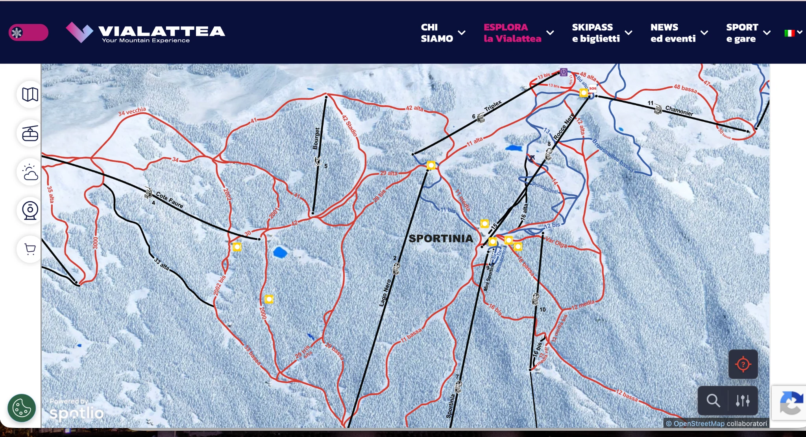

Winter · VialatteaExplore the interactive map ↗Sneeuw, bossen en 400 km skipistes.
Sauze d’Oulx is een van de toegangspoorten tot de Vialattea, het internationale skigebied dat Sauze, Sestriere, Sansicario, Cesana, Claviere en Pragelato verbindt.
Around 400 km of ski runs · over 100 km in the Sauze sector
Vanaf Sportinia sluiten de pistes van Sauze aan op de rest van het skigebied, door bossen en over hooggelegen hellingen. Skimateriaal is ook ter plaatse te huur.
Ontdek Vialattea ↗ · Clotes Ski Center ↗ Explore Vialattea ↗ Clotes Ski Center ↗
Plant u een skiweek? Lees onze gids voor skiën in Sauze → Planning a ski week? Read the Soft Wow guide to skiing in Sauze →